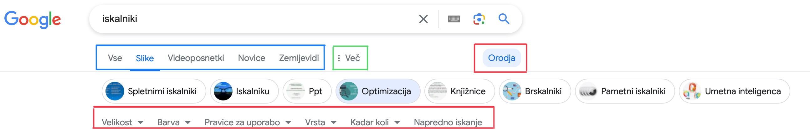

Funkcije
Osnovne funkcije
Najbolj osnovno iskanje, ki ga poznamo je, da direktno vpišemo našo poizvedbo. Že tu pa imamo nekaj možnosti za selekcijo zadetkov. V uvodni vrstici lahko vidimo glavne kategorije na katere zadetke razdelimo (obkroženo z modro). Pod možnostjo več (obkroženo z zeleno) imamo še nekaj kategorij, ki jih ni prikazanih. Funkcije, za katere pa ve manj ljudi, pa so skrite pod okencem orodje (obkroženo z rdečo). Te kriteriji se razlikujejo glede na kategorijo, ki smo jo izbrali prej (slike, novice....). (Google Search Help, 2024)
Napredne funkcije
So funkcije, ki so bolj zahtevne iz vidika tehnologije, ki stoji za njo, ali pa iz vidika uporabnikovega znanja pri vpisovanju. Večina posameznikov jih že pozna in jih uporablja na dnevni ravni. (Google Search Help, 2024)
- Za iskanje uporabimo mikrofon ali kamero.
- Uporabimo besede, ki so bolj verjetno uporabljene v člankih, spletnih straneh itd. Primer tega je »zdravnik za zobe« je manj primerno, kot pa »zobozdravnik«.
- Če odgovore želimo neposredno, iščemo:
- Vreme: namesto vreme --> vreme Ljubljana
- Definicije: namesto iskalnik --> definicija iskalnika
- Denar: namesto pretvornik valut --> 3 evre v dolarje....
Triki za izbolšanje rezultatov
(Google Search Help, 2024)
- Uporaba narekovajev
- Če želimo natančno besedno zvezo uporabimo narekovaje (""), da dobimo le zadetke, kjer se besedna zveza uporabi dobesedno. Primer: "mačji kašelj".
- Izključevanje besed
- Če želimo izključiti določeno besedo ali besedno zvezo, uporabimo minus (-).
Primer: avtomobili -rabljeni. Potrebno je paziti, kajti zadetek "avtohiša rabljenih vozil" bo še vedno med rezultati, ker vsebuje h medtem ko naša beseda za minusom tega ne vsebuje.
- Če želimo izključiti določeno besedo ali besedno zvezo, uporabimo minus (-).
- Uporaba zvezdice kot nadomestnega znaka
- Če se ne spomnimo določene besede v besedni zvezi lahko uporabimo zvezdico (*).
Primer: "najboljši * za sprehajanje psa" (park).
- Če se ne spomnimo določene besede v besedni zvezi lahko uporabimo zvezdico (*).
- Uporaba site
- Če želimo iskati informacije samo na določeni spletni strani uporabimo site.
Primer: site: uni-lj.si pedagoška fakulteta.
- Če želimo iskati informacije samo na določeni spletni strani uporabimo site.
- Uporaba datuma
- Če žlimo strani, ki so bile objavljene določenega dne, meseca, leta itd. dopišemo še datum.
Primer: Slovenske novice 2023.
- Če žlimo strani, ki so bile objavljene določenega dne, meseca, leta itd. dopišemo še datum.
- Uporaba intitle in inurl
- Za iskanje po naslovih strani. Primer:intitle: iskalnik.
- Za iskanje po url-jih. Primer: inurl:iskalnik.
- Uporaba related
- Če iščemo strani,ki so povezane z neko stranjo uporabimo related. Primer: related:uni-lj.si.
- Iskanje določenih datotek
- Če želimo le določene datoteke uporabimo filetype. Primer: filetype:pdf.